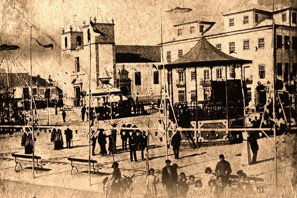

História da terra

Montijo tem a sua história intimamente ligada ao Rio Tejo, pois grande parte da sua área geográfica é delimitada pelo mesmo. A presença humana fez-se sentir naquela região desde muito cedo (pelo menos desde o Paleolítico, segundo vestígios arqueológicos encontrados), devido, muito provavelmente, às excelentes condições naturais.[9]
Nos alvores da nacionalidade (século XII), os coutos e herdades que existiam na atual área do concelho de Montijo foram doados por D. Sancho I, em 1186, aos Cavaleiros da Ordem de Santiago. Mais tarde, por aqui passaria D. Paio Peres Correia, Mestre daquela Ordem.
O núcleo populacional, habitado principalmente por pescadores e salineiros, muitos deles vindos das Rías Galegas e do litoral norte de Portugal (fruto do processo de repovoamento decorrente da reconquista cristã), começou a desenvolver-se desde que, na menoridade de D. Afonso V, o regente D. Pedro e o Mestre da Ordem de Santiago, o infante D. João, ambos tios do monarca, mandaram desassorear o esteiro de Alhos Vedros, construindo para o efeito uma estacada.
Em 1385, D. João I confirma os privilégios dados por D. Sancho. Mais tarde, em 1445, por carta régia de D. Afonso V, os coutos e terras de Aldeia Gallega são afetos ao património da rainha D. Isabel de Avis.[10]
No primeiro quartel do século XIV, os agricultores e fazendeiros de Aldeia Gallega, sob a proteção da Ordem de Santiago, erguem a Ermida de São Sebastião, que terá sido matriz da localidade até à construção da Igreja do Divino Espírito Santo, no século XVI.
Em março de 1498 D. Manuel I parte para Toledo a fim de ser jurado príncipe herdeiro de Castela e Leão, ao passar por Aldeia Gallega e ouvir as suas gentes, ordena a construção de um poço público junto à velha Albergaria, onde funcionava o Hospital da Caridade.
O mesmo rei D. Manuel outorgou foral à vila a 15 de setembro de 1514, desanexando-a da antiga freguesia de Santa Maria de Sabonha. No ano seguinte, a 17 de janeiro de 1515, renovou o foral, num diploma único para as duas vilas de Aldeia Gallega do Ribatejo e Alcochete.
Em 1520 é fundada a Santa Casa da Misericórdia de Aldeia Gallega do Ribatejo e, em 1571, por carta régia de D. Sebastião, é construída a Igreja da Misericórdia (classificada em 2009 como Imóvel de Interesse Público pelo IPPAR)[11][12]
O correio-mor, D. Luís Afonso, fez de Aldeia Gallega do Ribatejo, em 1533, a sede da Posta nas comunicações com o Sul de Portugal, e iniciam-se os trabalhos de melhoramentos e arranjos da Estrada Real (atual Estrada Nacional 4) que liga Lisboa a Badajoz, tornando a povoação ponto de passagem obrigatória para quem se dirigia à capital do Reino ou dela provinha. Desta forma a vila conheceu grande desenvolvimento e abastança, em particular durante a dinastia filipina, dado o crescente tráfego entre Lisboa, Toledo, Madrid e restante Espanha. Também do período filipino é a aprovação da Irmandade de Nossa Senhora da Conceição, em 1608, constituída por mareantes; bem como obras e melhoramentos na Igreja Matriz e na Vila.
Foi na então Aldeia Gallega do Ribatejo que o duque de Bragança, aclamado rei em Lisboa como D. João IV, em virtude do êxito da revolução de 1 de Dezembro de 1640, ao dirigir-se de Vila Viçosa para Lisboa, reuniu o primeiro Conselho Régio de que saíram nomeados os seus ministros e a constituição do Conselho de Guerra Permanente, bem como expedidas as primeiras ordens para as fronteiras do reino. Neste Conselho Régio, que se realizou no Palácio dos Condes de São Miguel, estiveram presentes D. Francisco de Melo, marquês de Ferreira; D. Francisco Álvares Botelho, Conde de São Miguel; Jorge de Melo, General das galés; D. Pedro de Mendonça Furtado, alcaide-mor de Mourão e "muitos fidalgos e clérigos idos de Lisboa".[13]
Em outubro de 1843 Aldeia Gallega recebeu, com pompa e circunstância, os reis D. Maria II e D. Fernando, o infante D. Luís, Duque do Porto, o Presidente do Conselho de Ministros Duque da Terceira e restante comitiva. Do programa oficial destaca-se a receção no Cais das Faluas onde foi erguido um arco triunfal em madeira; o Te Deum celebrado na Igreja Matriz e as cerimónias protocolares nas quais foram entregues a D. Maria II, por mão do Presidente do Senado Municipal, as "Chaves da Vila", tendo a rainha proferido um emocionado discurso. Após o banquete oferecido pelo Senado Municipal (que contou com a presença dos Condes de São Miguel, do proprietário agrícola João Ferreira Prego, 1º Barão de Samora Correia, e de ilustres montijenses), a família real realizou um passeio noturno pelo centro da vila piscatória, tendo pernoitado nos Paços do Concelho.[14][15]

As visitas Reais e o crescimento económico e demográfico da Vila no século XIX reafirmaram a importância de Aldeia Gallega. A 25 de maio de 1879 foi inaugurado (no atual edifício dos Paços do Concelho) o novo Tribunal e Cadeia Comarcã, contando com a presença do Presidente do Conselho de Ministros, Fontes Pereira de Melo, do Ministro dos Negócios Estrangeiros, Andrade Corvo, entre outros destacados membros do Governo e da Corte.
Em 1901 é aprovada, por Decreto do Governo, a substituição da iluminação pública a petróleo pela iluminação elétrica. Contudo, por diversas dificuldades e demoras, somente a 1 de maio de 1911 é que Aldeia Gallega inaugurou a luz elétrica, com grande festa na Vila e com a presença do Ministro do Interior e do Governador Civil.
Entre 1907 e 1908 foi construído o Ramal de Aldeia Gallega, financiado exclusivamente pela autarquia sem recorrer ao Fundo Especial de Caminhos de Ferro. O Ramal de Montijo foi encerrado em 1989 sob o XI Governo Constitucional.
O associativismo esteve sempre muito presente no espírito de Aldeia Gallega e dos montijenses. Assim, em 1854 foi fundada a Sociedade Filarmónica 1º de Dezembro; em 1872 a Associação Fraternal do Montepio de Aldegalega; em 1909 a Associação Humanitária dos Bombeiros Voluntários de Aldeia Gallega; em 1913 a Sociedade Cooperativa União Piscatória Aldegalense (SCUPA); em 1914 a Banda Democrática 2 de Janeiro; em 1937 a União Mutualista de Nossa Senhora da Conceição; em 1939 o Ateneu Popular de Montijo; em 1948 a Tertúlia Tauromáquica e o Clube Desportivo de Montijo, entre tantas outras associações e grémios.
Até 6 de junho de 1930, a sede de concelho era chamada de Aldeia Gallega do Ribatejo (ou simplesmente Aldeia Gallega), passando, a partir de então, a intitular-se Montijo, denominação assumida também pelo próprio concelho.
Ainda na década de 1930, logo no princípio da Segunda Guerra Mundial, foi instalado na península de Montijo, o Centro de Aviação Naval "Comandante Sacadura Cabral" que, a 12 de junho de 1954, foi incorporado na Força Aérea Portuguesa como Base Aérea n.º 6.[16]
Em 1942, Montijo, então Vila, beneficiou de profundas obras de "melhoramentos locais", nomeadamente com a instalação da rede pública de abastecimento de água e o melhoramento e expansão da rede de iluminação elétrica. Ao longo da década seguinte (1950) foram inaugurados o novo Palácio da Justiça (sede do Tribunal da Comarca de Montijo), a nova estação de correios, o Hospital Distrital, o Mercado Municipal, o Cine-Teatro Joaquim de Almeida, o Estabelecimento Prisional de Montijo (que vinha substituir a Cadeia Comarcã, inaugurada em 1879), a Praça de Touros Amadeu Augusto dos Santos (que substituiria a velha Praça de Touros construída em 1888), entre outros equipamentos. Inaugurou, também, dentro dos limites do concelho, a novíssima Colónia Agrícola de Pegões[17], aí instalada pela Junta de Colonização Interna e que viria a constituir, por desanexação de áreas pertencentes às freguesias de Canha e Marateca, a freguesia de Santo Isidro de Pegões.
Em 1985 a Vila de Montijo foi elevada à categoria de cidade. Nesse mesmo ano foram criadas as freguesias de Atalaia, Pegões, Alto Estanqueiro - Jardia e, em 1989, a freguesia de Afonsoeiro.
Em 2002 foi inaugurado o novo Terminal Fluvial do Seixalinho, a mais de 2 km da cidade, assegurando a continuidade da travessia Lisboa-Montijo. A opção pela localização deste equipamento foi objeto de uma discussão polémica que ainda não está consensualizada na sociedade montijense.
{% endblock %}